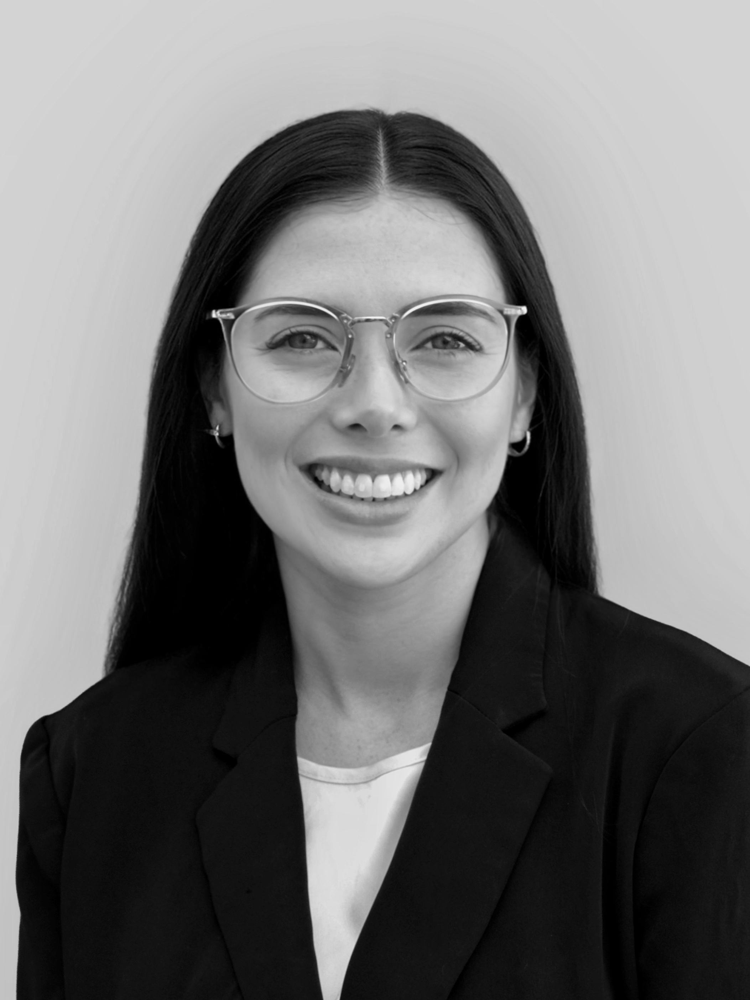

Stroke and cerebrovascular disease
I study the burden, risk factors, and outcomes of ischemic and hemorrhagic stroke using large-scale clinical and population datasets.
Example publications
Yale School of Medicine
Neuroendovascular Surgery Fellow
I am a neuroendovascular surgery fellow at Yale School of Medicine with a focus on stroke, cerebrovascular disease, and data-driven approaches to neurovascular care.

About
I trained in neurosurgery in Argentina before moving to the United States to pursue advanced clinical and research training in cerebrovascular disease.
I am currently a neuroendovascular surgery fellow at Yale School of Medicine, where my work integrates clinical care, imaging, and large-scale data analysis to better understand stroke and neurovascular disease.
My research spans population health, multi-omics approaches, and artificial intelligence, with the goal of improving patient outcomes and advancing our understanding of cerebrovascular conditions.
Research
My research focuses on understanding the mechanisms, risk factors, and outcomes of cerebrovascular disease, with a particular emphasis on stroke and neurovascular disorders.
I work across multiple approaches, including population-level analyses, multi-omics data, and neuroimaging, to identify patterns that can improve diagnosis, risk stratification, and patient outcomes.
I am also interested in the application of artificial intelligence and natural language processing to large clinical and imaging datasets to advance research and clinical decision-making in neurovascular care.
I study the burden, risk factors, and outcomes of ischemic and hemorrhagic stroke using large-scale clinical and population datasets.
Example publications
I use proteomic, genomic, and single-cell approaches to identify biological pathways and potential biomarkers in subarachnoid hemorrhage and ischemic stroke.
Example publications
I am interested in applying natural language processing, bibliometric methods, and computational tools to large clinical and academic datasets.
Example publications
Awards
My research has been recognized with multiple awards at leading international conferences in cerebrovascular disease, including:
Career
I completed my neurosurgery training in Argentina before continuing my academic and clinical development in the United States.
At Yale School of Medicine, I have worked as a postdoctoral associate and research fellow in cerebrovascular disease before beginning my current neuroendovascular surgery fellowship.
My work has been supported by the American Heart Association and has been recognized at major international conferences in stroke and neurovascular research.
Beyond Medicine
Outside of medicine and research, I enjoy sharing my journey as a physician and researcher, including life as an international medical graduate in the United States.
I am interested in travel, photography, and creative projects, and I value building connections within and beyond medicine.
Links
Contact